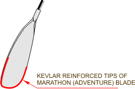

All Brača I paddles are available with an Adjustable Shaft System. This allows elegant adjustment of overall paddle length (within 5cm range) and blade angle from 0° to 80° right or left in 5° increments. The system also allows you to disassemble the paddle into two parts for easy transportation.
Brača I is available with Marathon blade construction. This is a result of advanced technology, a proprietary blend of composite materials and was designed with the marathon and adventure paddlers in mind. The edge of the blade is reinforced with a kevlar layer that makes it highly impact resistant in extreme down river conditions.
Brača I is available with Marathon blade construction. This is a result of advanced technology, a proprietary blend of composite materials and was designed with the marathon and adventure paddlers in mind. The edge of the blade is reinforced with a kevlar layer that makes it highly impact resistant in extreme down river conditions.
Brača I is also available in the extra light and stiff construction for the athletes who prefer light and stiff characteristics. You can also choose the stiffness of the shaft. We recommend a stiffer shaft for bigger blades but any combination is possible.
| Model | Blade | Shaft | Carbon content | Total weight |
|---|---|---|---|---|
| Braca I Max | 52 | 2.2-2.4 | 100% | 780/27.5 |
| Braca I S-Max | 51.8 | 2.5-2.6 | 100% | 680/24.0 |
| Braca I Min | 51.6 | 2.5-2.6 | 100% | 760/26.0 |
| Braca I S-Min | 51.4 | 2.7-2.8 | 100% | 740/26.1 |